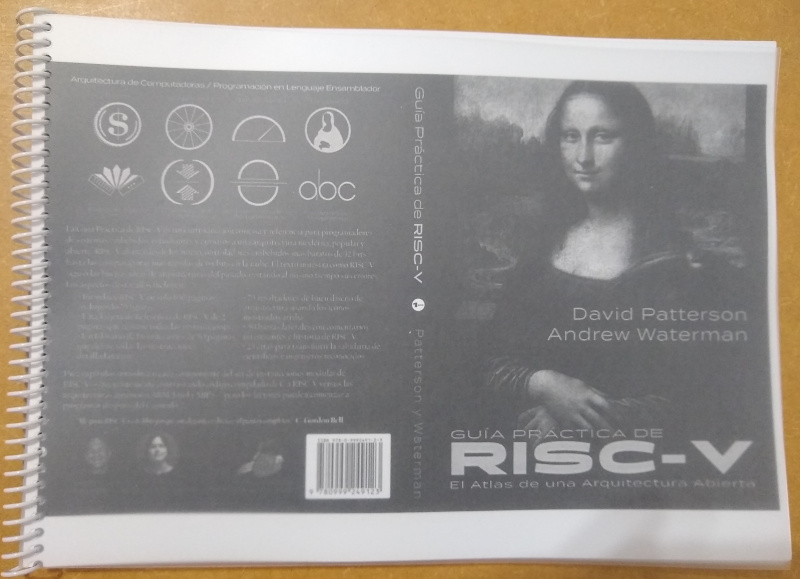

El 21 de Noviembre pasado tuve el gusto de participar del SiFive Tech Symposium en Montevideo (Uruguay) con Jean Pierre.
Haciendo un recuento de algunas de las charlas:
- Sin duda la que más valoré fué la keynote dada por Alfredo Arnaud, A low power RISC-V aimed at Implantable Medical Devices, ya que presenta la perspectiva de trabajo para equipos médicos, donde se manejan bajas frecuencias de trabajo y un ahorro extremo de energía (no se puede estar cambiando un marcapasos cada año, por ejemplo).
- Como noticia, SiFive University Platform presenta el plan de SiFive para universidades y se menciona una nueva placa que puede estar disponible en el futuro para universidades. Esperemos que luego esté disponible también para todo público.
- RISC-V Core IP for Target Vertical Markets ayuda a entender el negocio detrás de SiFive y compañias similares: estas diseñan procesadores genéricos a los cuales los clientes les pueden agregar su funcionalidad específica del negocio, obteniendo como resultado un procesador en un mismo die.
- El workshop Configure Custom RISC-V Core and Bring up on FPGA fué útil para ver el avance de las herramientas para una placa con ISA RISC-V. Utilizando el pendrive provisto, el workshop pudo realizarse a la perfección, pero cuando intenté utilizar debian buster tuve problemas para programar la placa Diligent Arty A7-100T. Es una desmotivación el estado del software open source para FPGA's. Preguntandole a David (traducción de Jean Pierre mediante) respecto de la ventaja de la placa fpga si se tenía una hifive1 rev b nos comentó que ninguna.
El resto de las charlas no me aportó mucho ya que estaban dirigidas a un público que no conociera el ISA y yo lo vengo siguiendo hace tiempo.
Como material SiFive entregó una copia del libro Guía Práctica de RISC-V: El Atlas de una Arquitectura Abierta.

En resumen valió la pena, aunque con gusto a poco. Sin duda el intercambio de comentarios con Jean Pierre ayudó a pasar el día.